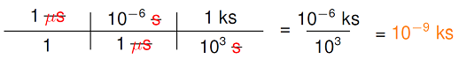
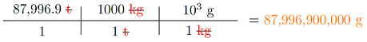

4. Units and scientific notation¶
4.1. Overview¶
Sometimes it is the most ordinary things that can be important. One of these are the units you will use to explain what a given number means. If I tell you the distance is “5”, what does that mean: 5 centimeters? 5 kilometers? 5 light-years? Those are very different measures of a length – the first would be the life’s journey of a tiny bacteria, the second a nice run for the day, and the last is roughly the distance from the Sun to the nearest star system.
{kind=link}
{kind=link}
In 1999 the Mars Climate Orbiter is believed to have either disintegrated in Mars’ atmosphere, or bounced off into deep space, due to improper software code. One of the craft’s programs output impulse measurements in “ft lbs” instead of the metric standard “N s”. Physics teachers around the country are grateful that NASA spent $327 million for this shining example of why you should always watch your units!
This lesson goes through the basics of units, along with some related topics: prefixes and scientific notation. You should use this lesson as a reference through the course, since I often see students get lax with their units by the end of the year, and make some rookie mistakes! If you crash another multi-million dollar probe, I will use your picture to show why you need to know your units.
Here are the objectives for this lesson:
List the basic SI units for distance, mass and time.
List all prefixes to be used in intermediate physics, along with the power of ten associated with them.
Convert between a base unit and a unit of the same type with a prefix, or units of the same type with different prefixes.
Convert between a number in decimal form and one in scientific notation.
Convert between non-SI units and the appropriate SI unit.
State the definitions of average and instantaneous velocity.
Describe how the graphs of position vs. time and velocity vs. time for an object are related.
4.2. SI units and prefixes¶
SI units (“SI” for the French “Systeme International”) are a system of units designed to simplify the process of measurement as much as possible. These units, also known as “metric units”, were first developed during the French Revolution, but have come to be a system used globally. They are convenient, since conversions between many units for the same type of quantity use a power of 10. Here is a table of the base units we will use this year. Dimension is the basic physical quantity that is being measured, while the unit is how the dimension is measured.
Dimension |
SI unit (abbrev.) |
|---|---|
length |
meter (m) |
mass |
kilogram (kg) |
time |
second (s) |
electric current |
ampere (A) |
To understand the difference between dimension and unit, notice that I can measure the same dimension in different units – time can be measured in seconds, hours, or years. In addition, we will later built up other units from combinations of these basic units (for example, velocity is measured in meters per second).
Hopefully, you have a good sense of what a second is, but maybe not the same intuition for a meter or a kilogram. My height is a little bit less than two meters; this is roughly the same as the distance from fingertip to fingertip when I fully stretch out my arms. A two liter bottle of soda has a mass of two kilograms. Notice that the base unit of mass is the kilogram, not the gram! The original definition started with the gram, but then it was decided to be too small of a unit, so they made the kilogram the base unit. Interestingly enough, the definitions of all the base SI units was recently changed, to make them more accurate as well as more accesible to scientists around the world; you can find out more at the SI units page created by the National Institute of Standards and Technology.
However, these units are not always so useful. For example, what is the typical diameter of an atom? What is the mass of a new Ford-class aircraft carrier? The diameter would be a really small number, and the mass a very large one. To built up better units, we can glue a prefix onto the front of the basic unit. Some common prefixes are listed in the table below; this list – with the power, prefix, and abbrevation, must be memorized!
Power |
Prefix |
Abbreviation |
|---|---|---|
\(10^{-9}\) |
nano |
n |
\(10^{-6}\) |
micro |
\(\mu\) |
\(10^{-3}\) |
milli |
m |
\(10^{-2}\) |
centi |
c |
\(10^3\) |
kilo |
k |
\(10^6\) |
mega |
M |
\(10^9\) |
giga |
G |
Thus, we can see that it may be more appropriate to use nanometers (instead of meters) for the size of an atom, or gigagrams (instead of kilograms) for the aircraft carrier’s mass.
Don’t make prefixes difficult
The one error I see students make over and over is to use the prefix table above incorrectly. Often they try to “think too much” about it, and thus flip the sign of the exponent in the power of ten. Here’s how you should think of this: the prefix is the same as the power of ten. In other words, you can replace one with the other, and not change anything. Thus, for example,
1 milligram = \(10^{-3}\) grams
So, the “milli” is replaced by “\(10^{-3}\)” to get an equivalent amount.
To convert between one such unit to another, it is very helpul to use the method of railroad tracks. This method does a lot of the thinking for you. I often see students try to do something different, and it usually ends up in a mess. Railroad tracks are your friend!
So how do they work? Suppose we want to find out how many kiloseconds there are in one microsecond. Our process is the following. Write our given amount and unit in the numerator and 1 in the denominator. When converting between two units that both have metric prefixes, convert to the base unit first. Next, add another “track” which takes us from the base unit to the final unit. Multiply all of the numerators together and write the result (including unit), then repeat for the denominators. Evaluate your new fraction and write the final result, including unit. Thus, the result would look something like

As emphasized above, in each of the conversions, the prefix is replaced by the power of ten: 1 microsecond is the same as \(10^{-6}\) seconds, 1 kilosecond is the same as \(10^3\) seconds. In other words, where the prefix is on one side is replaced by the number on the other. Also, note the “one with the prefix” is not always on the top or the bottom, it is where it needs to be to cancel out other units, or to give the desired unit at the end. The second part has microseconds in the bottom, to cancel the first one in the top; the third part has kiloseconds in the top, since that is what we want at the end!
Problem
How many megameters are in one meter? Choose the correct answer below.
\(10^{-9}\) megameters
\(10^{-6}\) megameters
\(10^6\) megameters
\(10^9\) megameters
Answer: \(10^{-6}\) megameters
Problem
How many milligrams are in one kilogram? Choose the correct answer below.
\(10^{-9}\) milligrams
\(10^{-3}\) milligrams
\(10^3\) milligrams
\(10^6\) milligrams
\(10^9\) milligrams
Answer: \(10^6\) milligrams
Problem
How many kiloseconds are in one microsecond?
Answer: \(10^{-9}\) kiloseconds
Problem
Write a Python function microToCenti() that converts distances in micrometers into distances in centimeters. The function takes the argument dist_in_micro for the distance in micrometers, and returns the equivalent distance in centimeters. In Python, powers of ten are given using the letter E; for example, \(10^4\) can be written in Python as 1E4.
Answer: Here is a possible program.
def microToCenti(dist_in_micro):
# Convert micrometers -> meters -> cm
dist_in_meters = 1E-6 * dist_in_micro # 1 micrometer = 1E-6 m
dist_in_cm = dist_in_meters / 1E-2 # 1 cm = 1E-2 m
# Return converted distance
return dist_in_cm
Did you try those last problems? Get out a pencil, paper, and a calculator, and give them a go. I’ll wait.
4.3. Non-SI units, scientific notation and significant figures¶
Above, I mentioned finding the mass of a Ford-class aircraft carrier. Suppose I really want to measure this mass in grams – what would I get? If you go to the appropriate US Navy website, you will see the displacement listed as “87,996.9 metric tons”. When we get to Lesson 15 (buoyancy), you will learn that this is the mass of the water displaced (or pushed aside) by the ship. If the ship is floating (hopefully!), this is equal to the mass of the ship itself. So we need to convert this into grams.
This gets us into how to convert using non-SI units. You will use the “railroad track” method just like you do for metric to metric conversions. Remember, within a single track column, the top and bottom must be equivalent. For example, saying that 1 inch is the same as 2.54 centimeters means that part of your railroad track can look like
Since the top and bottom are equivalent, it is like multiplying by 1!
Looking up the definition of a metric ton (abbreviation “t”), we find out that it is the same as 1,000 kilograms. So, we need to convert metric tons to kilograms, and then kilograms to grams:

These ships have a mass of 87,996,900,000 grams – remember that one gram is about the mass of a paper clip; that’s a lot of office supplies in one ship! Other than the new type of conversion factor (metric tons to kilograms), this is very similar to what you did before.
Problem
Convert 3,450 m to miles. Where can you find the appropriate conversion factor?
Answer: 2.14 mi
Problem
Nijat Rahimov of Kazakhstan won the men’s 77 kg weightlifting gold at the 2016 Olympics. He lifted 165 kg in the “snatch” and a record-breaking 214 kg in the “clean and jerk” for a total of 379 kg. What was the total amount of weight he lifted, in pounds? Where can you find the appropriate conversion factor?
{kind=link}
{kind=link}
Answer: 834 lbs
Problem
Write a Python function yardsToMeters() that converts a distance in yards into the appropriate number of meters. The argument of the function should be dist_in_yards, the number of yards for a given distance, and the function should return the equivalent number of meters. Where can you find the necessary unit conversions?
Answer: From the equation sheet, you have that one foot is 3.281 meters. This is utilized in the following program.
def yardsToMeters(dist_in_yards):
# Convert yards -> feet -> meters
dist_in_feet = 3 * dist_in_yards # 1 yd = 3 ft
dist_in_meters = dist_in_feet / 3.281 # 1 m = 3.281 ft
# Return converted distance
return dist_in_meters
Is there a more efficient way of writing the carrier’s mass than 87,996,900,000 grams? That’s where scientific notation comes into play. Proper scientific notation writes a number in the form \(a \times 10^b\), where \(a\) is a number between 1 and 10, and it is multiplied by the appropriate power of ten, or \(10^b\). You can also think of this as moving the decimal point. Every time you move the point to the left, you gain a power of ten, and to the right, you lose one. Thus, the mass of the carrier would be \(8.79969 \times 10^{10}\) grams. The decimal point started to the right of the last zero in 87,996,900,000; I had to move it to the right ten times to get it just to the right of the “8”, which gives me a number 8.79969 between 1 and 10, multiplied by ten to the tenth power, for the ten places I moved the decimal.
Problem
How would you write 6,370,000 in proper scientific notation? Choose the correct choice below.
\(6,370 \times 10^3\)
\(63.7 \times 10^5\)
\(6.37 \times 10^6\)
\(0.637 \times 10^7\)
Answer: \(6.37 \times 10^6\)
Problem
The number \(1.98 \times 10^{-4}\) is equivalent to which of the following choices?
0.0000198
0.000198
0.00198
19,800
Answer: 0.000198
Problem
How would you write 6.00 \(\mu\)m in terms of meters and in scientific notation? Choose the correct choice below.
0.000006 m
\(6.00 \times 10^{-9}\) m
\(6.00 \times 10^{-6}\) m
\(6.00 \times 10^{-3}\) m
Answer: \(6.00 \times 10^{-6}\) m
Problem
Your friend is stationed in San Diego, which is 4,794 km from Newport.
How many megameters away is that?
How many micrometers away is it? Write in scientific notation.
Providence is only 55.33 km from Newport. Driving to San Diego would be like making how many trips from Newport to Providence?
Answers: 4.794 Mm; \(4.794 \times 10^{12}\) \(\mu\)m; 86.64 trips
This gives the standard scientific notation. However, there is an alternative format, known as engineering notation, that is useful for converting from numbers with base SI units into units with prefixes. The idea is to write the number as you would with ordinary scientific notation, but use only a multiple of three as the exponent for the power of ten. Thus, the number out front has to be something between 1 and 1000. For example, if I take the carrier’s mass, then
The advantage to engineering notation is that you can now directly read off the proper prefix for the base units grams. Since \(10^9\) is the prefix “giga” (G), then the carrier has a mass of 87.996 Gg. Just to be clear, though, when I say “scientific notation”, I am still referring to the standard version! I will come back to this point later.
By the way, you may still have a question about the ship’s mass quoted above. Why do I need all of those numbers in \(8.79969 \times 10^{10}\) grams? It’s pretty close to \(9 \times 10^{10}\) grams, so can’t I use that? Well, what it means is that the US Navy has a very precise measurement of the mass of the carrier. This is reflected in the number of significant figures reported in their data. Physically, significant figures (or “sig figs”) depend on how precisely you can measure a quantity. How many sig figs should you use for each of the rulers shown in the figure?
{kind=link}
The ruler on the left has widely spaced markings, so you could only measure a length to one digit (“1” or “2”). The one on the right has more markings, and therefore you can measure to two digits (“1.1” or “1.2”). Thus, the left ruler can give 1 sig fig, while the right ruler can give two. A greater number of significant figures means the number has been measured to a higher precision.
A good rule of thumb to use to find the number of sig figs a number has is to think about whether the number had to be written, or whether it is acting as a “placeholder” such as zero often does. To spell this out, here are some guidelines:
All non-zero digits are significant: 3.1415 has 5 sig figs, while 3.1 has only 2.
Zeros between non-zero digits are significant: 50009 has 5 sig figs, and 1.01 has 3.
Leading zeros (left of the first non-zero digits) are not significant: 0.0999 and 0.0102 both have 3 sig figs. These are only placeholders, meant to indicate that the “1” in the last number, for example, is in the hundreths place, not the tenths.
Trailing zeros when no decimal place is present are not necessarily significant: 330 may have 2 or 3 sig figs, while 590,100 has 4, 5, or 6.
They are significant if a decimal place is written: 330. has 3 sig figs, and 590,100. has 6.
The latter two points are why (proper) scientific notation is a good way of writing numbers, to be sure of the number of significant figures. I can write \(5.9010 \times 10^5\), and know the number has 5 sig figs – I didn’t have to write the last zero, so its inclusion means it is significant.
Problem
How many sig figs does the number 0.010200 have?
Answer: The number 0.010200 has five significant figures.
One good guideline when doing numerical calculations is to keep the numbers in the intermediate steps to one more sig fig than you need for the actual answer, then you would round the number at the end. This typically gives you more accuracy from the calculation.
Problem
All of the numbers below are given with 4 significant figures. Write down each number to only three sig figs.
1.432
17.09
\(5.267 \times 10^{-7}\)
\(9.996 \times 10^4\)
Answer: 1.43; 17.1; \(5.27 \times 10^{-7}\); \(1.00 \times 10^5\)
So, why is engineering notation not the best? Suppose I have a length of \(3.0 \times 10^{-4}\) m; you can easily see in scientific notation that this number has two sig figs. However, if I convert it to engineering notation, then it becomes \(300 \times 10^{-6}\) m, or 300 \(\mu\)m. How many sig figs does it have now? The answer is unclear, since we can’t easily identify it as “two” like we did in the standard notation. This is why we will stick to the standard notation, but you should be aware of engineering notation, and its strengths and weaknesses.
4.4. Summary¶
This lesson dealt with the SI system of units, and dealt with building up derived units with prefixes, and converting between two different units. Along the way, we also talked about scientific notation and significant digits. We will be using all of these concepts throughout the year, so you need to maintain a solid grasp of using them. Remember to periodically review this material when it gets fuzzy!
After this lesson, you should be able to:
Convert between different types of units, including SI and non-SI units, as well as units with prefixes.
Write a number in proper scientific notation, with the correct number of signficant figures.